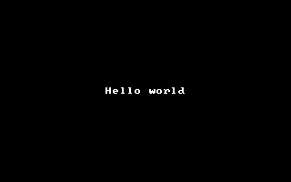
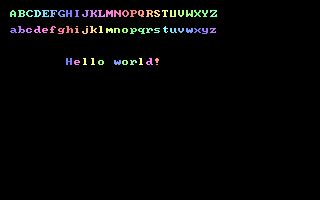

Help Center›FreeBASIC
Draw Stringkeyword
Graphics statement to render text to an image or screen.
Syntax
Draw String [buffer,] [STEP] (x, y), text [,color [, font [, method [, (alpha|blender) [, parameter] ] ] ] ]Parameters
| Name | Description | |
|---|---|---|
buffer | the sprite to draw the string on. If this is not supplied, it will be drawn to the screen.STEPuse relative coordinates. If STEP is added, the x and y coordinates are translated relative to the last drawn point. | |
x | , | |
y | the horizontal / vertical position to draw to, relative to the top left hand corner of the screen (unless STEP is used - see above). The top left corner of the text will be drawn at this position. | |
text | the string containing the text to draw | |
color | if no font is supplied, this allows you to choose the color of the text. If omitted, the default foreground Color is used.If a font is supplied, | |
color | is ignored, and the font itself specifies the color for each pixel. | |
font | an image buffer containing a custom font. If no font is supplied, the standard font for the current text resolution is used, and the following parameters are ignored. | |
method | | Customspecifies how the font characters are drawn on top of the target surface. The same methods as found for the Put statement are allowed, with the only difference that the default method is Trans for this function. This parameter only applies to custom fonts. | |
alpha | alpha value, ranging 0-255. This parameter only applies to the Add or Alpha methods. | |
blender | custom blender function for the Custom drawing method; see Put (Graphics) statement description for details. This parameter only applies to the Custom method. | |
parameter | optional Pointer to be passed to the custom blender function; if omitted, the default value is zero (0). |
Description
This graphics keyword prints a string to the screen with pixel positioning, transparent background, and can use an user-supplied font.
Draw String does not update any text or graphics cursor. It doesn't wrap at the end of line. Tabs, carriage returns and other special characters have no special behavior in Draw String, and are treated as normal characters.In graphics mode, this function provides a flexible alternative to
Print. It has several key advantages:-
Draw Stringcan print text to any coordinate on the screen, whilePrintis constrained to the character grid accessible byLocate.
-
Printwill override the background behind the text with the current background color.Draw Stringdoes not do this: it leaves the pixels in the background untouched.
- Like
Put,Draw Stringhas several different methods for printing text, such asAlphaandCustom.
-
Draw Stringisn't limited to a single character set: it is possible to supply a custom font to be used instead.
Draw String will default to the standard font, as used by Print, with character size dictated by Width. method - if passed - will be ignored, and the text will be drawn using the color supplied, with a transparent background.Draw String coordinates are affected by custom coordinates system set via Window and View (Graphics) statements, and the drawn text respects clipping rectangle set by View (Graphics).The custom font format:
The font is stored in a standard
Get/Put buffer; the font has to be stored in a buffer using the same depth as the current color depth, otherwise Draw String will bump out with an illegal function call runtime error.The first line of pixels in the font buffer holds the header of the font, on a byte (not pixel) basis. The very first byte identifies the font header version; currently this must be
0. The second byte gives the ascii code of the first supported character in the font; the third byte gives the ascii code of the last supported character. So if the font supports the full range 0-255, 0 and 255 will be the contents of these two bytes.Next comes the width of each of the supported characters, each in a byte. Supposing the font holds 96 characters, ranging from 32 to 127 (inclusive), the header would have the first three bytes holding
0, 32 and 127, followed by 96 bytes giving the widths of the corresponding chars.The font height is obtained by subtracting 1 from the buffer height, that is, while the first buffer line of pixels acts as a font header, the remaining lines define the glyphs' layout. The buffer must be as wide as necessary to hold all the supported character sprites in the same row, one after another.
Remarks
Usage
Draw String [buffer,] [STEP] (x, y), text [, color]
Draw String [buffer,] [STEP] (x, y), text , , font [, method [, alpha ] ]
Draw String [buffer,] [STEP] (x, y), text , , font, Custom, blender [, parameter]
Differences from QB
- New to FreeBASIC
See also
Example
This gives an example of basic
Draw String usage: it uses it to print "Hello world" in the center of the screen:Const w = 320, h = 200 '' screen dimensions
Dim x As Integer, y As Integer, s As String
'' Open a graphics window
ScreenRes w, h
'' Draw a string in the centre of the screen:
s = "Hello world"
x = (w - Len(s) * 8) \ 2
y = (h - 1 * 8) \ 2
Draw String (x, y), s
'' Wait for a keypress before ending the program
Sleep

This example shows you how to create and use your own custom font. For simplicity, it uses
Draw String with the default font to create the glyphs.'' Define character range
Const FIRSTCHAR = 32, LASTCHAR = 127
Const NUMCHARS = (LASTCHAR - FIRSTCHAR) + 1
Dim As UByte Ptr p, myFont
Dim As Integer i
'' Open a 256 color graphics screen (320*200)
ScreenRes 320, 200, 8
'' Create custom font into PUT buffer
myFont = ImageCreate(NUMCHARS * 8, 9)
'' Put font header at start of pixel data
#ifndef ImageInfo '' older versions of FB don't have the ImageInfo feature
p = myFont + IIf(myFont[0] = 7, 32, 4)
#else
ImageInfo( myFont, , , , , p )
#endif
p[0] = 0
p[1] = FIRSTCHAR
p[2] = LASTCHAR
'' PUT each character into the font and update width information
For i = FIRSTCHAR To LASTCHAR
'' Here we could define a custom width for each letter, but for simplicity we use
'' a fixed width of 8 since we are reusing the default font glyphs
p[3 + i - FIRSTCHAR] = 8
'' Create character onto custom font buffer by drawing using default font
Draw String myFont, ((i - FIRSTCHAR) * 8, 1), Chr(i), 32 + (i Mod 24) + 24
Next i
'' Now the font buffer is ready; we could save it using BSAVE for later use
Rem BSave "myfont.bmp", myFont
'' Here we draw a string using the custom font
Draw String (10, 10), "ABCDEFGHIJKLMNOPQRSTUVWXYZ", , myFont
Draw String (10, 26), "abcdefghijklmnopqrstuvwxyz", , myFont
Draw String (66, 58), "Hello world!", , myFont
'' Free the font from memory, now we are done with it
ImageDestroy myFont
Sleep

Reference
- Documented in KeyPgDrawString.html